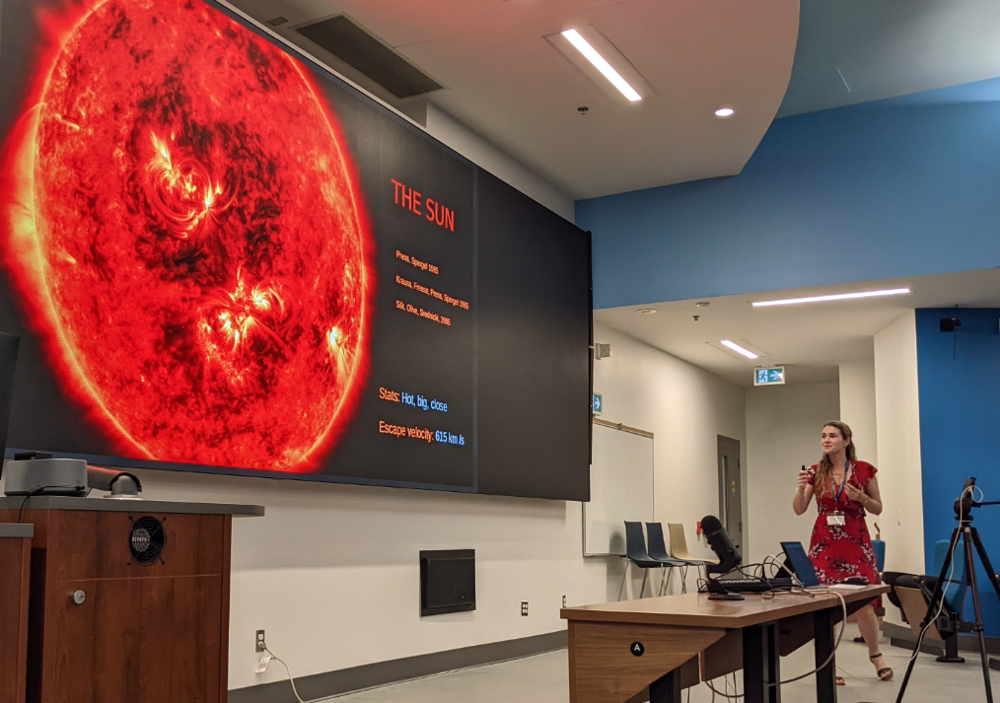

Theoretical Particle Physicist
SLAC National Accelerator Lab
Stanford University
@RKLeane / @rkleane.bsky.social
rleane@slac.stanford.edu
The overarching goal of my research is to reveal the fundamental nature of dark matter. My expertise is in new search strategies for dark matter, leveraging both terrestrial experiments and astrophysical systems. My research explores new dark matter research avenues such as planetary and stellar probes, novel uses of existing experiments and quantum sensors, and investigates potential dark matter signals in the latest astrophysical datasets.
Highlighted Publications
(asterisk implies alphabetically ordered author list)
For my full publication list, see inSPIRE or Google Scholar.
I supervise SLAC postdocs, Stanford Graduate rotations, Stanford PhD theses, as well as summer undergraduate research at Stanford and SLAC. For an up to date list of possibilities, see here.
If you are applying to Stanford for your PhD, please feel free to get in touch with any questions. If you have already been admitted, please feel free get in touch to discuss possibilities. Latest CV is available here: pdf
I love giving talks! I have given over 100 invited talks worldwide; see CV for an up to date list. My work has been featured prominently in the press, some examples are linked in my CV. See on the right for some outreach videos.Prospective Students and Postdocs
My CV
Talks
Outreach and Press
Public Lecture at Stanford University
Searches for Dark Matter with Astrophysical Objects
Video Interview, Universe Today
Interview with Dr. Rebecca K. Leane, Detecting Dark Matter
Get in touch
{kind=link}
{kind=link}
{kind=link}